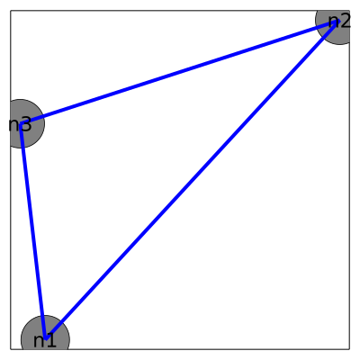
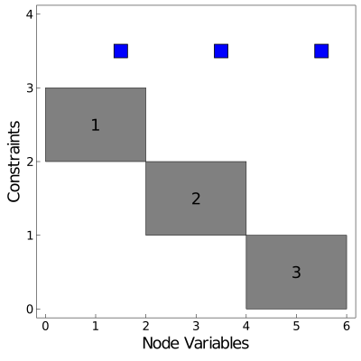

Quickstart
This quickstart example gives a brief overview of the functions needed to effectively use Plasmo.jl to build optimization models. If you are familiar with JuMP.jl, much of the functionality you see here will be familiar. In fact, the primary OptiGraph and OptiNode objects from Plasmo.jl extend the JuMP.AbstractModel and support many JuMP functions.
The below example demonstrates the construction of a simple linear optimization problem that contains two optinodes coupled by a simple LinkConstraint (which creates an OptiEdge) which is solved with the GLPK linear optimization solver. Additional examples can be found at the Plasmo Examples repository.
Once Plasmo.jl has been installed, you can use it from a Julia session as following:
julia> using PlasmoFor this example we also need to import the GLPK optimization solver and the PlasmoPlots package which we use to visualize graph structure.
julia> using GLPK
julia> using PlasmoPlotsCreate an OptiGraph
The following command will create the optigraph (referred to as graph). We also see the printed output which denotes the number of optinodes, optiedges, link-constraints, and subgraphs (other optigraphs contained within graph).
julia> graph = OptiGraph()
OptiGraph: # elements (including subgraphs)
-------------------------------------------------------------------
OptiNodes: 0 (0)
OptiEdges: 0 (0)
LinkConstraints: 0 (0)
sub-OptiGraphs: 0 (0)An OptiGraph distinguishes between its direct elements (optinodes and optiedges contained directly within the graph) and its subgraph elements (optinodes and optiedges contained within its subgraphs). This distinction is used to describe hierarchical graph structures in Hierarchical Modeling using Subgraphs.
Add OptiNodes
An optigraph consists of OptiNodes which contain stand-alone optimization models. An optinode supports JuMP macros used to create variables, constraints, expressions, and objective functions (i.e. it supports JuMP macros such as @variable, @constraint, and @objective). The simplest way to add optinodes to an optigraph is to use the @optinode macro as shown in the following code snippet. For this example we create the optinode n1, we create two optinode variables x and y, and we add a single constraint and an objective function.
julia> @optinode(graph, n1)
OptiNode w/ 0 Variable(s) and 0 Constraint(s)
julia> @variable(n1, y >= 2)
n1[:y]
julia> @variable(n1, x >= 0)
n1[:x]
julia> @constraint(n1, x + y >= 3)
n1[:y] + n1[:x] ≥ 3.0
julia> @objective(n1, Min, y)
n1[:y]We can create more optinodes and add variables, constraints, and objective functions to each of them.
julia> @optinode(graph, n2);
julia> @variable(n2, y >= 0);
julia> @variable(n2, x >= 0);
julia> @constraint(n2, x + y >= 3);
julia> @objective(n2, Min, y);
julia> @optinode(graph, n3);
julia> @variable(n3, y >= 0);
julia> @variable(n3, x >= 0);
julia> @constraint(n3, x + y >= 3);
julia> @objective(n3, Min, y); julia> println(graph)
OptiGraph: # elements (including subgraphs)
-------------------------------------------------------------------
OptiNodes: 3 (3)
OptiEdges: 0 (0)
LinkConstraints: 0 (0)
sub-OptiGraphs: 0 (0)Create LinkConstraints
A LinkConstraint can be used to couple variables between optinodes. Creating a link-constraint automatically creates an OptiEdge in the optigraph which describes the connectivity between optinodes. Link-constraints are created using the @linkconstraint macro which takes the exact same input as the JuMP.@constraint macro. The following code creates a link-constraint between variables on the three optinodes.
julia> @linkconstraint(graph, n1[:x] + n2[:x] + n3[:x] == 3)
: n1[:x] + n2[:x] + n3[:x] = 3.0
julia> println(graph)
OptiGraph: # elements (including subgraphs)
-------------------------------------------------------------------
OptiNodes: 3 (3)
OptiEdges: 1 (1)
LinkConstraints: 1 (1)
sub-OptiGraphs: 0 (0)
Using the standard @constraint macro on an optigraph will also create a link-constraint. The @linkconstraint syntax is preferred to help model readability.
Nonlinear link-constraints are not yet supported.
Solve the OptiGraph and Query the Solution
When using a MathOptInterface.jl (MOI) optimization solver, we can optimize an optigraph using the set_optimizer and optimize! functions extended from JuMP. Plasmo.jl will translate the optigraph into an MOI optimizer to solve the model.
julia> set_optimizer(graph, GLPK.Optimizer)
julia> optimize!(graph)After returning from the optimizer we can query the termination status using termination_status (again just like in JuMP). We can also query the solution of variables using value and the objective value of the graph using objective_value
julia> termination_status(graph)
OPTIMAL::TerminationStatusCode = 1
julia> value(n1[:x])
1.0
julia> value(n2[:x])
2.0
julia> value(n3[:x])
0.0
julia> objective_value(graph)
6.0It is also possible to optimize individual optinodes, or even optimize different optigraphs that share the same optinode. The latest optimization result is always accessible using value(variable). The results specific to an optinode or optigraph can be accessed with value(node, variable) (for optinodes) or value(graph, variable) (for optigraphs).
Plasmo.jl assumes the objective function of each optinode is added by default. The objective function for an optigraph can be changed using the @objective macro on the optigraph itself. This will update the local objective function on each optinode.
Nonlinear graph objective functions are not yet supported. Currently, the user must set nonlinear objective functions on each optinode which get added together.
Visualize the Structure
Lastly, it is often useful to visualize the structure of an optigraph. The visualization can lead to insights about an optimization problem and understand its connectivity. Plasmo.jl uses PlasmoPlots.jl (which builds on Plots.jl and NetworkLayout.jl) to visualize the layout of an optigraph. The code here shows how to obtain the graph topology using PlasmoPlots.layout_plot and we plot the corresponding incidence matrix structure using PlasmoPlots.matrix_plot. Both of these functions can accept keyword arguments to customize their layout or appearance. The matrix visualization also encodes information on the number of variables and constraints in each optinode and optiedge. The left figure shows a standard graph visualization where we draw an edge between each pair of nodes if they share an edge, and the right figure shows the matrix representation where labeled blocks correspond to nodes and blue marks represent linking constraints that connect their variables. The node layout helps visualize the overall connectivity of the graph while the matrix layout helps visualize the size of nodes and edges.
plt_graph = PlasmoPlots.layout_plot(graph,
node_labels=true, markersize=30, labelsize=15, linewidth=4,
layout_options=Dict(:tol=>0.01, :iterations=>2),
plt_options=Dict(:legend=>false, :framestyle=>:box, :grid=>false,
:size=>(400,400), :axis=>nothing))
plt_matrix = PlasmoPlots.matrix_plot(graph, node_labels=true, markersize=15)  